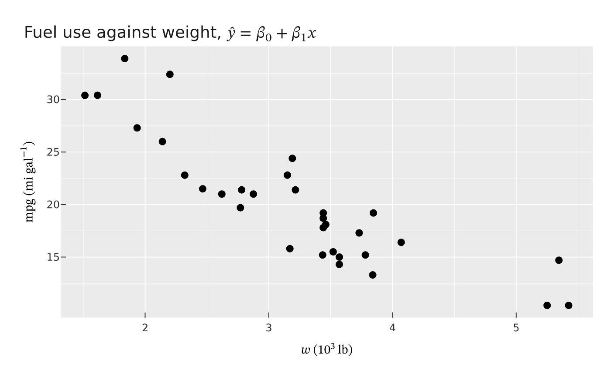

tex() builds a label from TeX math notation and plotmath() from R's
plotmath notation (as ggplot2's parse = TRUE reads it); tex() also
takes plotmath unevaluated, tex(quote(x[i]^2)). They are vellum::tex()
and vellum::plotmath(), re-exported. A math label goes wherever an md()
label does: labs() titles, scale names, discrete scale labels =
(a list, one label per key), mark_text() and mark_label() labels (one
label, or a list with one per row; or parse = TRUE to parse a column),
facet strips through label_parsed(), and annotate(). md() labels can
carry inline math between $ signs. The formula is typeset by vellum, the
same in PNG, SVG and PDF; alt text and the widget's tooltips show its TeX
source.
Examples
vplot(mtcars) |>
mark_point(x = wt, y = mpg) |>
labs(
title = md("Fuel use against weight, $\\hat{y} = \\beta_0 + \\beta_1 x$"),
x = tex("w\\ (10^3\\,\\mathrm{lb})"),
y = plotmath("mpg ~ (mi~gal^-1)")
)
